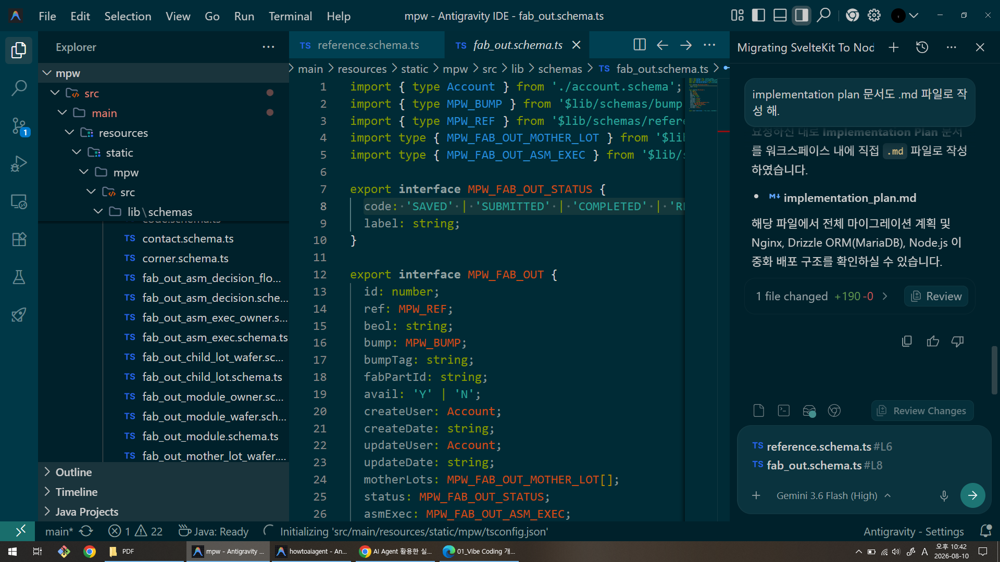
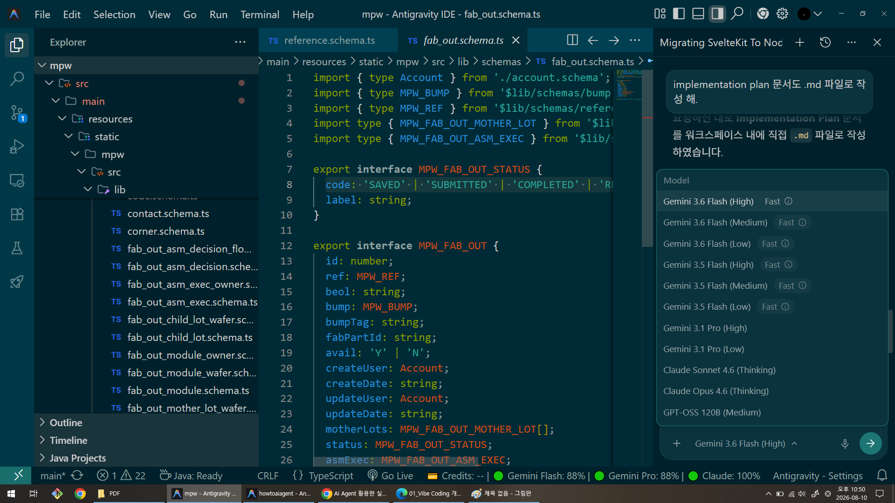
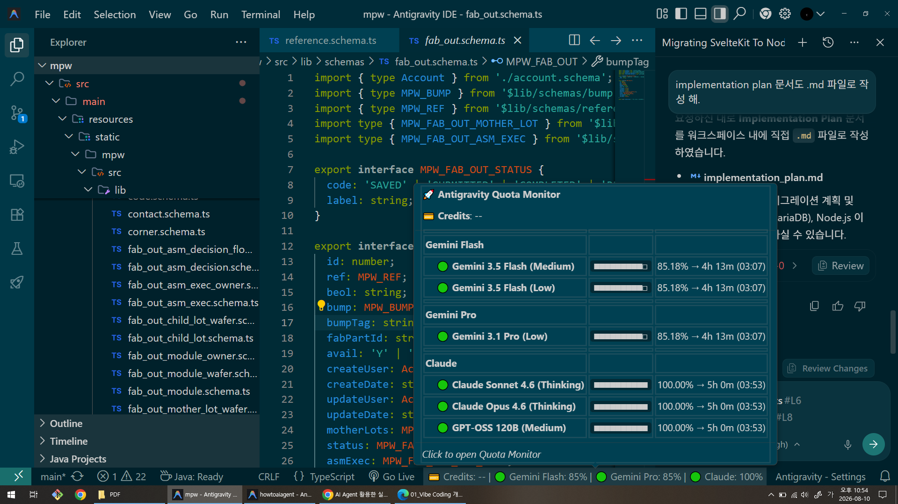
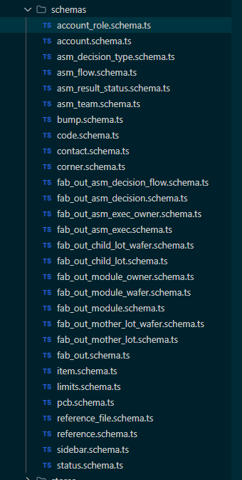
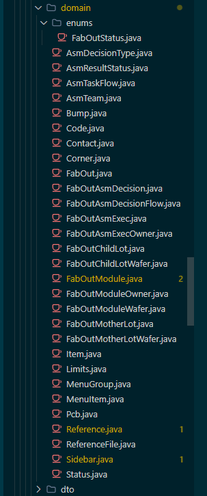
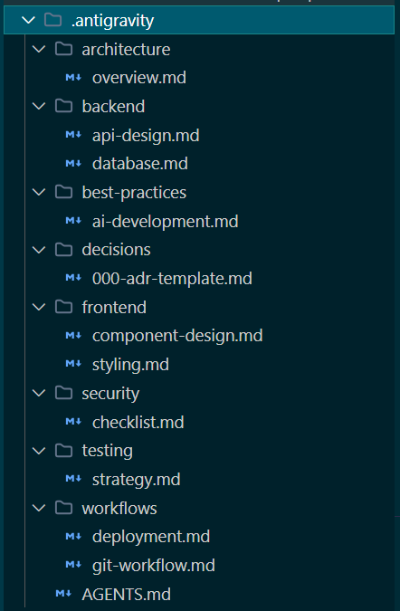

❖ 단순 보조 도구에서 프로젝트 단위 자율 협업 파트너로의 발전



❖ 직관과 AI 동반 성장
❖ 적합하지 않은 프로젝트
❖ 표준화된 개발 프로세스
Budget Book Commit History:
https://github.com/moregorenine/budget-book/commits/main/❖ 순차적 개발 프로세스 (Conventional Waterfall / Linear)
// MPW Fab-Out 도메인 모델 정의
import { type Account } from './account.schema';
import { type MPW_BUMP } from '$lib/schemas/bump.schema';
import { type MPW_REF } from '$lib/schemas/reference.schema';
import type { MPW_FAB_OUT_MOTHER_LOT } from '$lib/schemas/fab_out_mother_lot.schema';
import type { MPW_FAB_OUT_ASM_EXEC } from '$lib/schemas/fab_out_asm_exec.schema';
export interface MPW_FAB_OUT_STATUS {
code: 'SAVED' | 'SUBMITTED' | 'COMPLETED' | 'RETIRED';
label: string;
}
export interface MPW_FAB_OUT {
id: number;
ref: MPW_REF;
beol: string;
bump: MPW_BUMP;
bumpTag: string;
fabPartId: string;
avail: 'Y' | 'N';
createUser: Account;
createDate: string;
updateUser: Account;
updateDate: string;
motherLots: MPW_FAB_OUT_MOTHER_LOT[];
status: MPW_FAB_OUT_STATUS;
asmExec: MPW_FAB_OUT_ASM_EXEC;
retireComment: string;
retireDate: Date;
retireUser: Account;
}
export const fabOutSchema = '++id, avail, createDate'; // process+phase 복합 인덱스는 ref를 통해야 하므로 일단 제거

package com.samsung.mpw.domain;
import com.samsung.dt.domain.Account;
import lombok.*;
import javax.persistence.*;
import org.hibernate.annotations.CreationTimestamp;
import org.hibernate.annotations.UpdateTimestamp;
import java.time.LocalDateTime;
import java.util.ArrayList;
import java.util.List;
import com.samsung.mpw.domain.enums.FabOutStatus;
@Entity
@Table(name = "MPW_FAB_OUT")
@Getter
@Setter
@NoArgsConstructor
@AllArgsConstructor
@Builder
public class FabOut {
@Id
@GeneratedValue(strategy = GenerationType.IDENTITY)
private Long id;
@ManyToOne(fetch = FetchType.LAZY)
@JoinColumn(name = "ref_id")
private Reference ref;
@Column(length = 50)
private String beol;
@ManyToOne(fetch = FetchType.LAZY)
@JoinColumn(name = "bump_code")
private Bump bump;
@Column(name = "bump_tag", length = 50)
private String bumpTag;
@Column(name = "fab_part_id", length = 100)
private String fabPartId;
@Column(length = 1)
private String avail;
@ManyToOne(fetch = FetchType.LAZY)
@JoinColumn(name = "create_user_id")
private Account createUser;
@CreationTimestamp
@Column(name = "create_date", updatable = false)
private LocalDateTime createDate;
@ManyToOne(fetch = FetchType.LAZY)
@JoinColumn(name = "update_user_id")
private Account updateUser;
@UpdateTimestamp
@Column(name = "update_date")
private LocalDateTime updateDate;
@Enumerated(EnumType.STRING)
@Column(length = 20)
private FabOutStatus status; // SAVED, SUBMITTED, COMPLETED, RETIRED
@Column(name = "retire_comment", length = 1000)
private String retireComment;
@Column(name = "retire_date")
private LocalDateTime retireDate;
@ManyToOne(fetch = FetchType.LAZY)
@JoinColumn(name = "retire_user_id")
private Account retireUser;
@Builder.Default
@OneToMany(mappedBy = "fabOut", cascade = CascadeType.ALL, orphanRemoval = true)
private List<FabOutMotherLot> motherLots = new ArrayList<>();
}

❖ AI 명령 실행 전 제약사항 및 지침 주입
.antigravity\artifacts\todo\{yymmdd}-{작업명}-plan.md
작성.antigravity\AGENTS.md
규칙 참조# PCB 관리 페이지 개발 계획
## 1. 개요
`MPW_PCB` 엔티티에 대한 CRUD 기능을 풀스택(백엔드 API + 프론트엔드 라우터)으로 개발한다.
프론트엔드는 `/pcb` 라우터로 접근하며, Tabulator editable 방식으로 인라인 조회/생성/수정이 가능하다.
Account(IP 담당자, 발주자) 필드는 사용자 검색 팝업을 통해 선택한다.
---
## 2. 백엔드 (Spring Boot + JPA)
### [MODIFY] `Pcb.java` (Domain — 기존 파일)
- 이미 생성됨. 변경 없음.
---
### [NEW] `PcbDto.java` (DTO)
**경로**: `com.samsung.mpw.dto.PcbDto`
```java
@Data @Builder @NoArgsConstructor @AllArgsConstructor
public class PcbDto {
private Long id;
private String cisCode;
private LocalDate orderDate;
private LocalDate receivingDate;
private Integer receivedQuantity;
private Integer remainingQuantity;
private LocalDate checkDate;
private UserDto ipManager; // Account → UserDto 변환
private UserDto orderer; // Account → UserDto 변환
private String reqNo;
private String sapCode;
private LocalDate disposalDate;
private String outsourceReqNo;
private LocalDateTime createDate;
private LocalDateTime updateDate;
}
```
---
### [NEW] `PcbRequestDto.java` (DTO — 생성/수정 요청)
**경로**: `com.samsung.mpw.dto.PcbRequestDto`
```java
@Data @Builder @NoArgsConstructor @AllArgsConstructor
public class PcbRequestDto {
private String cisCode;
private LocalDate orderDate;
private LocalDate receivingDate;
private Integer receivedQuantity;
private Integer remainingQuantity;
private LocalDate checkDate;
private Long ipManagerId; // Account ID
private Long ordererId; // Account ID
private String reqNo;
private String sapCode;
private LocalDate disposalDate;
private String outsourceReqNo;
}
```
---
### [NEW] `PcbRepository.java` (Repository)
**경로**: `com.samsung.mpw.repository.PcbRepository`
```java
@Repository
public interface PcbRepository extends JpaRepository<Pcb, Long> {
List<Pcb> findAllByOrderByCreateDateDesc();
}
```
---
### [NEW] `PcbService.java` (Service)
**경로**: `com.samsung.mpw.service.PcbService`
```java
@Service
@RequiredArgsConstructor
@Slf4j
@Transactional(readOnly = true)
public class PcbService {
private final PcbRepository pcbRepository;
private final AccountRepository accountRepository; // 기존 Account 조회용
public List<PcbDto> getAll() {
return pcbRepository.findAllByOrderByCreateDateDesc()
.stream().map(this::toDto).collect(Collectors.toList());
}
@Transactional
public PcbDto create(PcbRequestDto req) {
Pcb pcb = Pcb.builder()
.cisCode(req.getCisCode())
.orderDate(req.getOrderDate())
.receivingDate(req.getReceivingDate())
.receivedQuantity(req.getReceivedQuantity())
.remainingQuantity(req.getRemainingQuantity())
.checkDate(req.getCheckDate())
.ipManager(findAccount(req.getIpManagerId()))
.orderer(findAccount(req.getOrdererId()))
.reqNo(req.getReqNo())
.sapCode(req.getSapCode())
.disposalDate(req.getDisposalDate())
.outsourceReqNo(req.getOutsourceReqNo())
.build();
return toDto(pcbRepository.save(pcb));
}
@Transactional
public PcbDto update(Long id, PcbRequestDto req) {
Pcb existing = pcbRepository.findById(id)
.orElseThrow(() -> new IllegalArgumentException("PCB not found: " + id));
// 각 필드 null 체크 후 업데이트
if (req.getCisCode() != null) existing.setCisCode(req.getCisCode());
// ... 나머지 필드
if (req.getIpManagerId() != null) existing.setIpManager(findAccount(req.getIpManagerId()));
if (req.getOrdererId() != null) existing.setOrderer(findAccount(req.getOrdererId()));
return toDto(existing);
}
@Transactional
public void delete(Long id) {
pcbRepository.deleteById(id);
}
private Account findAccount(Long id) {
if (id == null) return null;
return accountRepository.findById(id).orElse(null);
}
private PcbDto toDto(Pcb pcb) {
return PcbDto.builder()
.id(pcb.getId())
.cisCode(pcb.getCisCode())
.orderDate(pcb.getOrderDate())
// ...모든 필드 매핑
.ipManager(pcb.getIpManager() != null ? UserDto.builder()
.id(pcb.getIpManager().getId())
.username(pcb.getIpManager().getUsername())
.email(pcb.getIpManager().getEmail())
.build() : null)
.orderer(pcb.getOrderer() != null ? UserDto.builder()
.id(pcb.getOrderer().getId())
.username(pcb.getOrderer().getUsername())
.email(pcb.getOrderer().getEmail())
.build() : null)
.createDate(pcb.getCreateDate())
.updateDate(pcb.getUpdateDate())
.build();
}
}
```
> [!IMPORTANT]
> `AccountRepository` 위치 확인 필요. 기존 `dt` 모듈에 위치할 수 있음.
> `com.samsung.dt.repository.AccountRepository` 존재 여부 사전 확인.
---
### [NEW] `PcbController.java` (Controller)
**경로**: `com.samsung.mpw.controller.PcbController`
```java
@RestController
@RequiredArgsConstructor
@RequestMapping("/api/pcb")
@Api(tags = "PCB 관리 API")
public class PcbController {
private final PcbService pcbService;
@GetMapping
@ApiOperation(value = "PCB 목록 조회")
public ResponseEntity<List<PcbDto>> getAll() {
return ResponseEntity.ok(pcbService.getAll());
}
@PostMapping
@ApiOperation(value = "PCB 생성")
public ResponseEntity<PcbDto> create(@RequestBody PcbRequestDto req) {
return ResponseEntity.ok(pcbService.create(req));
}
@PutMapping("/{id}")
@ApiOperation(value = "PCB 수정")
public ResponseEntity<PcbDto> update(@PathVariable Long id, @RequestBody PcbRequestDto req) {
return ResponseEntity.ok(pcbService.update(id, req));
}
@DeleteMapping("/{id}")
@ApiOperation(value = "PCB 삭제")
public ResponseEntity<Void> delete(@PathVariable Long id) {
pcbService.delete(id);
return ResponseEntity.noContent().build();
}
}
```
---
## 3. 프론트엔드 (SvelteKit + Tabulator)
### [NEW] `src/lib/api/pcb.ts`
Axios 기반 API 함수 모음.
```ts
import axios from "axios";
import type { MPW_PCB } from "$lib/schemas/pcb.schema";
export interface PcbRequestDto {
cisCode?: string;
orderDate?: string; // ISO date string (yyyy-MM-dd)
receivingDate?: string;
receivedQuantity?: number;
remainingQuantity?: number;
checkDate?: string;
ipManagerId?: number;
ordererId?: number;
reqNo?: string;
sapCode?: string;
disposalDate?: string;
outsourceReqNo?: string;
}
export const getPcbList = (): Promise<MPW_PCB[]> =>
axios.get("/api/pcb").then((r) => r.data);
export const createPcb = (data: PcbRequestDto): Promise<MPW_PCB> =>
axios.post("/api/pcb", data).then((r) => r.data);
export const updatePcb = (id: number, data: PcbRequestDto): Promise<MPW_PCB> =>
axios.put(`/api/pcb/${id}`, data).then((r) => r.data);
export const deletePcb = (id: number): Promise<void> =>
axios.delete(`/api/pcb/${id}`).then((r) => r.data);
```
---
### [NEW] `src/routes/pcb/+page.svelte`
Tabulator를 이용한 인라인 editable CRUD 페이지.
#### 핵심 설계
- **editable 컬럼**: `cisCode`, `orderDate`, `receivingDate`, `receivedQuantity`, `remainingQuantity`, `checkDate`, `reqNo`, `sapCode`, `disposalDate`, `outsourceReqNo`
- Tabulator `editor: 'input'` (문자열), `editor: 'date'` (날짜), `editor: 'number'` (숫자)
- **Account 필드** (`ipManager`, `orderer`): 편집 시 기존 `IpOwnerPopup` 팝업 재활용. cell formatter로 `username` 표시.
- **행 추가**: 상단 `Add` 버튼 클릭 → 빈 행을 Tabulator에 추가 (`table.addRow({})`) → 편집 후 `Save` 버튼 클릭 시 `createPcb` 호출
- **행 수정**: `cellEdited` 이벤트 → `updatePcb` 호출
- **행 삭제**: Actions 컬럼의 `Delete` 버튼 → confirm 후 `deletePcb` 호출
- **Actions 컬럼**: Delete 버튼 포함. Account 선택 버튼 포함.
#### 컬럼 정의 요약
| 컬럼 | field | editor | 비고 |
| ------------------- | ------------------ | ------ | ------------- |
| CIS Code | cisCode | input | |
| 발주일 | orderDate | date | |
| 입고일 | receivingDate | date | |
| 입고 수량 | receivedQuantity | number | |
| 잔여수량 | remainingQuantity | number | |
| 확인 날짜 | checkDate | date | |
| IP 담당자 | ipManager.username | — | 팝업으로 선택 |
| 발주자 | orderer.username | — | 팝업으로 선택 |
| Req. No | reqNo | input | |
| SAP Code | sapCode | input | |
| 불용 처리일 | disposalDate | date | |
| 외주 개발 의뢰서 No | outsourceReqNo | input | |
| 입력 일시 | createDate | — | 읽기전용 |
| Actions | — | — | Delete 버튼 |
---
### [MODIFY] `src/routes/+layout.svelte`
사이드바 `routes` 배열에 PCB 메뉴 추가.
```diff
{ path: '/master/assembly', label: 'Assembly' }
+ { path: '/pcb', label: 'PCB' }
```
---
## 4. 주의사항
> [!IMPORTANT]
> `AccountRepository` 위치 및 접근 방법 확인 필요.
> 다른 서비스(FabOutService 등)에서 Account를 조회하는 방식 참조.
> [!NOTE]
> Tabulator의 `date` editor는 브라우저 기본 date input 형식(`yyyy-MM-dd`)을 사용.
> 백엔드에서 `LocalDate`로 받으므로 직렬화 포맷 일치 필요 (`@JsonFormat` 또는 Jackson 설정 확인).
> [!WARNING]
> Account 필드(ipManager, orderer)는 Tabulator의 기본 editor로 처리 불가.
> 커스텀 formatter + 클릭 이벤트로 팝업 연동 구현 필요.
---
## 5. 생성 파일 목록
### 백엔드
| 파일 | 경로 |
| -------------------------- | ---------------------------- |
| [NEW] `PcbDto.java` | `com.samsung.mpw.dto` |
| [NEW] `PcbRequestDto.java` | `com.samsung.mpw.dto` |
| [NEW] `PcbRepository.java` | `com.samsung.mpw.repository` |
| [NEW] `PcbService.java` | `com.samsung.mpw.service` |
| [NEW] `PcbController.java` | `com.samsung.mpw.controller` |
### 프론트엔드
| 파일 | 경로 |
| ------------------------- | ----------------- |
| [NEW] `pcb.ts` | `src/lib/api/` |
| [NEW] `+page.svelte` | `src/routes/pcb/` |
| [MODIFY] `+layout.svelte` | `src/routes/` |질문과 토론을 환영합니다
github.com/moregorenine/
howtoaiagent
moregorenine.github.io/
howtoaiagent
Space / ← → 로
슬라이드 이동